Solo travelers usually value eSIM speed and no pickup. Families may still prefer one shared pocket WiFi if batteries and device handoff are manageable.
Planning resources
Japan travel resources for the decisions people actually book.
Use this hub when you are close to checkout: internet, hotel areas, airport transfers, rail choices, travel insurance, and day trips all affect the final cost.
Independent comparisons
Start with route fit and total cost, then compare providers.
Some resource links may become affiliate links later; recommendations should still be based on route fit, cancellation terms, coverage, and real trip cost.
Booking order
Book in the order that avoids expensive rework.
01
Set the budget range
Decide how many nights, how many cities, and what daily comfort level fits your trip.
02 Choose the hotel basePick an area with good train access before comparing individual hotel prices.
03 Check transport mathCompare individual train tickets, regional passes, buses, and open-jaw flights.
04 Finish trip basicsSort data, insurance, airport transfer, and day trips once the route is stable.
Compare before you pay
Good resource pages should answer the tradeoff, not just list links.
A slightly higher nightly rate near a useful station can beat a cheap room that adds transfers and late-night taxi risk.
Airport buses and luggage delivery often save more stress than the absolute cheapest train route when bags are heavy.
Medical coverage matters, but delays, cancellation, lost baggage, and English-language support can matter just as much on a first Japan trip.
Resource categories
The practical checklist before paying for a Japan trip.
 City guide
Tokyo for budget travelers
City guide
Tokyo for budget travelers
Main sightseeing zones, hotel bases, airport access, cheap food, and route planning.
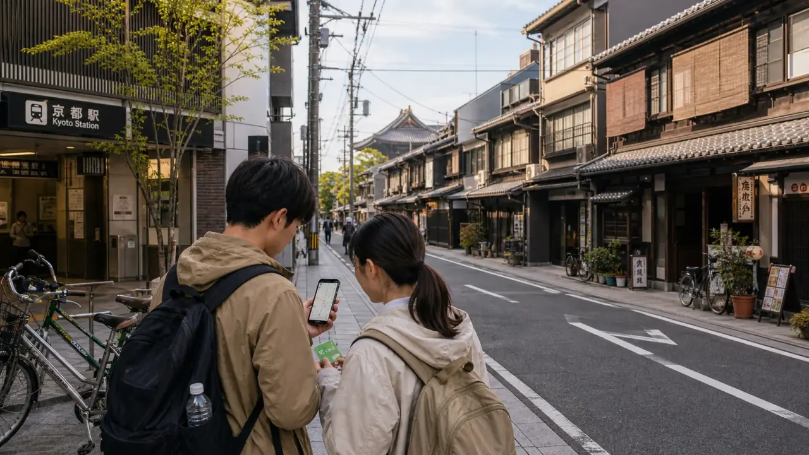
City guide Kyoto for budget travelersSightseeing zones, hotel bases, crowd timing, airport access, and route planning.
 City guide
Osaka for budget travelers
City guide
Osaka for budget travelers
Food zones, Namba vs Umeda, Osaka Castle, Kansai Airport access, and day trips.
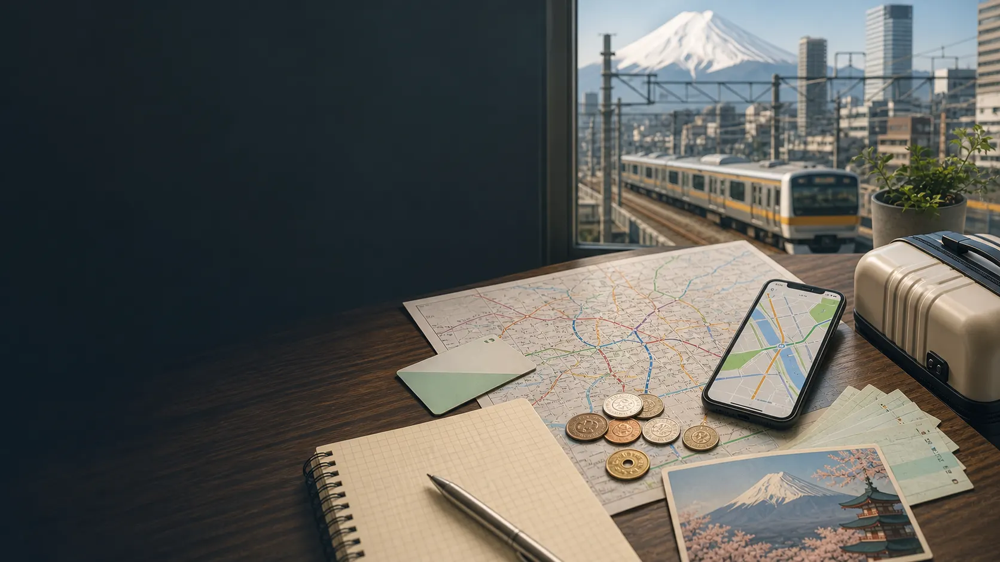
Classic route Tokyo, Kyoto, Osaka in 7 daysUse a focused city order, hotel base plan, and transport checklist before booking.
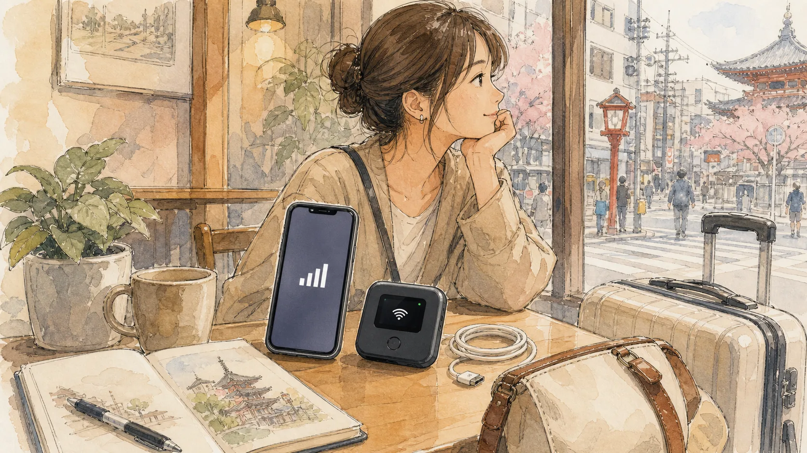
Internet eSIM vs pocket WiFiChoose data based on group size, laptop use, battery life, and pickup friction.
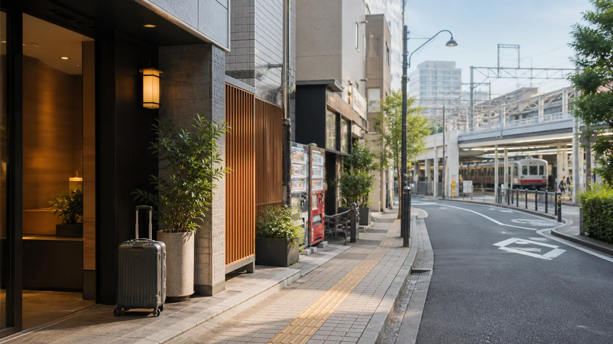
Hotels Tokyo hotel areasCompare Ueno, Asakusa, Ikebukuro, Shinjuku, and Tokyo Station for value.
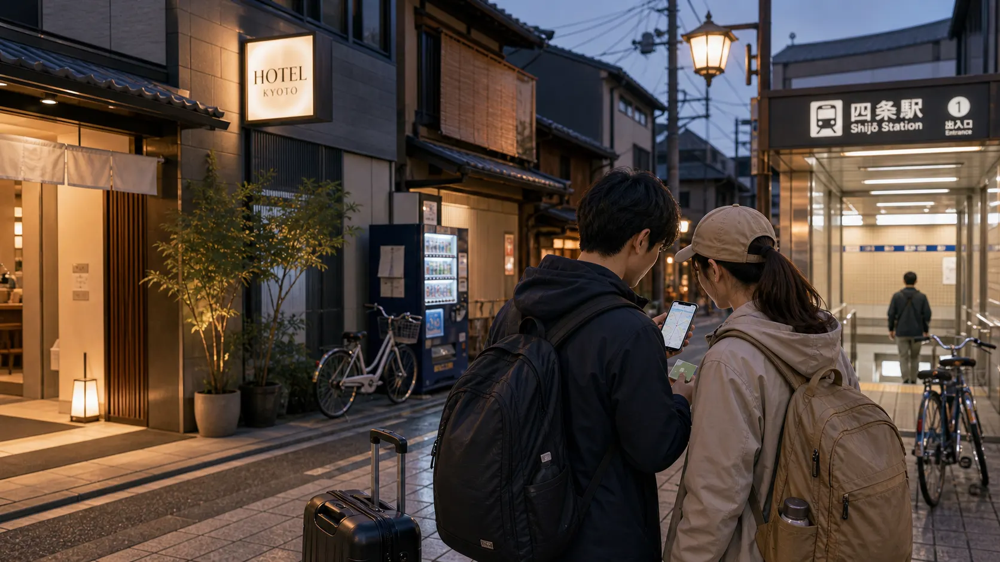
Hotels Kyoto hotel areasCompare Kyoto Station, Shijo-Kawaramachi, Gion, Nijo, and Osaka as a base.
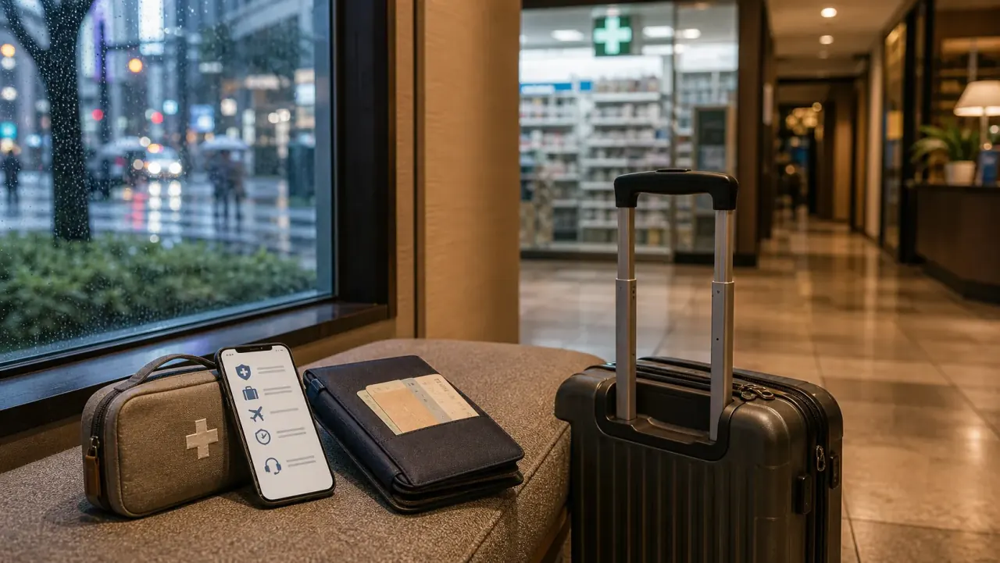
Insurance Travel insurance checklistCheck medical coverage, cancellation, delays, translation help, and exclusions.
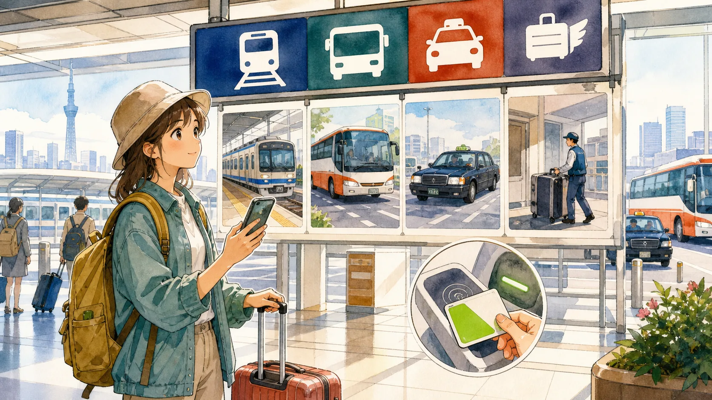
Airport transfers Airport transfer choicesCompare trains, airport buses, taxis, private transfers, and luggage delivery.
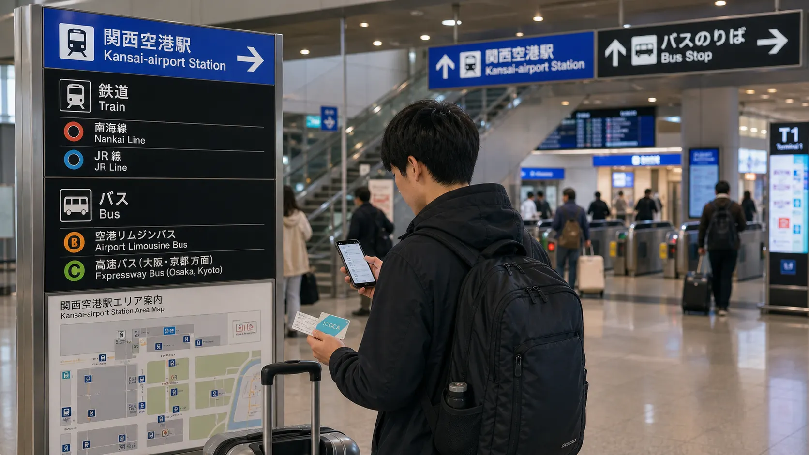
Kansai Airport KIX to Osaka or KyotoChoose between Namba, Umeda, Shin-Osaka, Kyoto, bus, rail, taxi, and transfer.
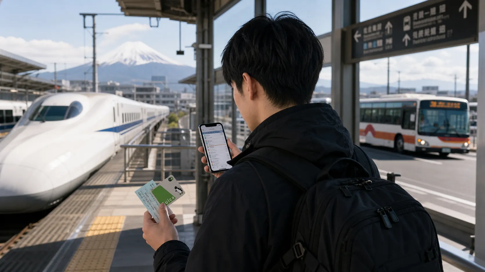
Rail and transport JR Pass alternativesUse route math before buying a nationwide pass; many first trips do not need one.
 Tours and day trips
Mount Fuji day trip
Tours and day trips
Mount Fuji day trip
Decide between bus, train, guided tour, and overnight stay based on weather odds.
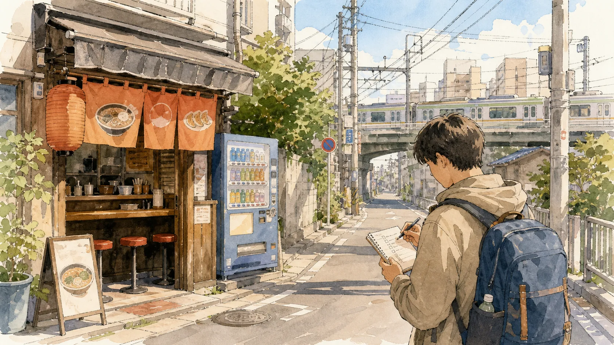
Budget tool Trip cost calculatorEstimate lodging, food, transport, attractions, and buffer before booking.
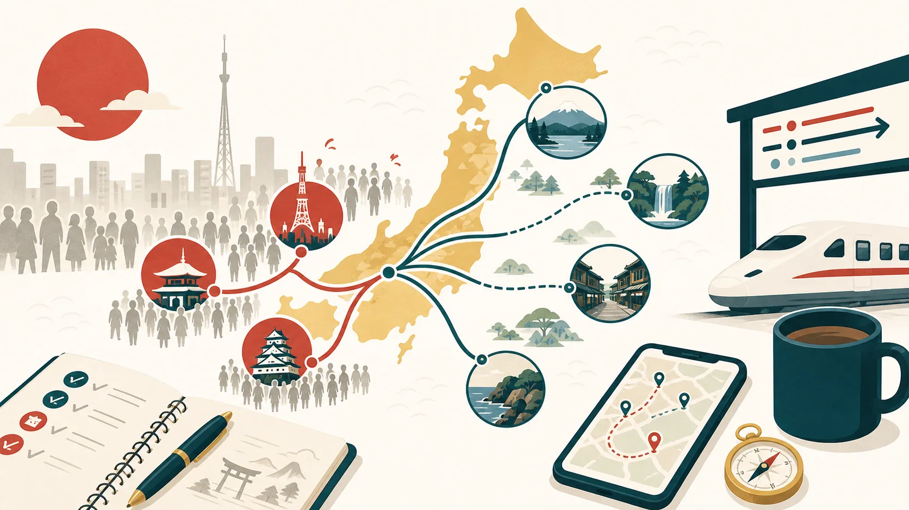
Crowds and timing Japan crowd planningShift timing and route order to avoid the most expensive bottlenecks.